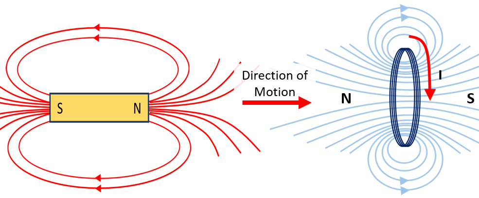
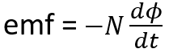

HOME BLOG EBOOKS ABOUT CONTACT SHOP
In Faraday's second experiment he placed 2 coils in proximity and induced a current in the second coil by varying current in the first coil. Now, here’s a thought. If this experiment works, then can we just place many coils in the proximity of a current carrying coil and induce current in all of them? Yes, that’s possible. But unfortunately there’s a catch in all this, called mutual induction. When we induce a current in the secondary coil, this current will itself produce a flux in the secondary coil. This flux will link with primary coil inducing an EMF and a current in the primary, this is a mutual process.
The problem is that the current induced back in the primary will be in the opposite direction to the original applied current in the primary, thus reducing the overall effect. This is a direct consequence of the law of conservation of energy. In electromagnetics, it’s called the Lenz’s law, named after the physicist Emil Lenz who came up with a theory for this in 1834. The Lenz’s law states that “the direction of the electric current which is induced in a conductor by a changing magnetic field is such that the magnetic field created by the induced current opposes the cause that induced it”. Lenz's Law ensures that the electrical energy of the primary coil is reduced by the same amount as the energy gained by the secondary coil. In other words, an induced effect is always such as to oppose the cause that produced it.
Consider the figure below. In this case the north pole of the bar magnet is moving towards the coil and this induces an emf and a current in the coil. To conserve energy, the coil must oppose this motion of the bar magnet and this can be done if the left side of the coil acts as a north pole (north- north repulsion). Therefore, the current is induced in the coil in such a way that a north pole is created on the left side of the coil. If instead the north pole of the bar magnet was pulled away from the coil, then to resist this motion the coil would need to create a south pole on its left side in order to attract the north side of the bar magnet and in turn stop it from moving away. So the current in the coil is induced accordingly.

Taking the lenz’s law into account, the equation for the induced emf can be modified as,

Here N denotes the no of turns in the coil.